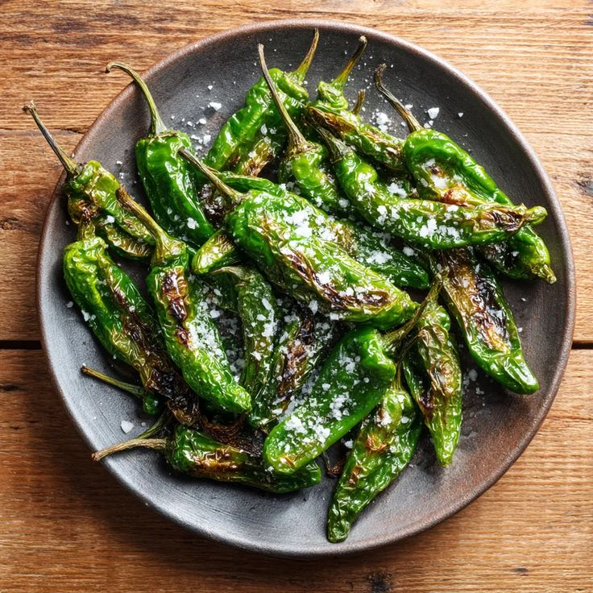
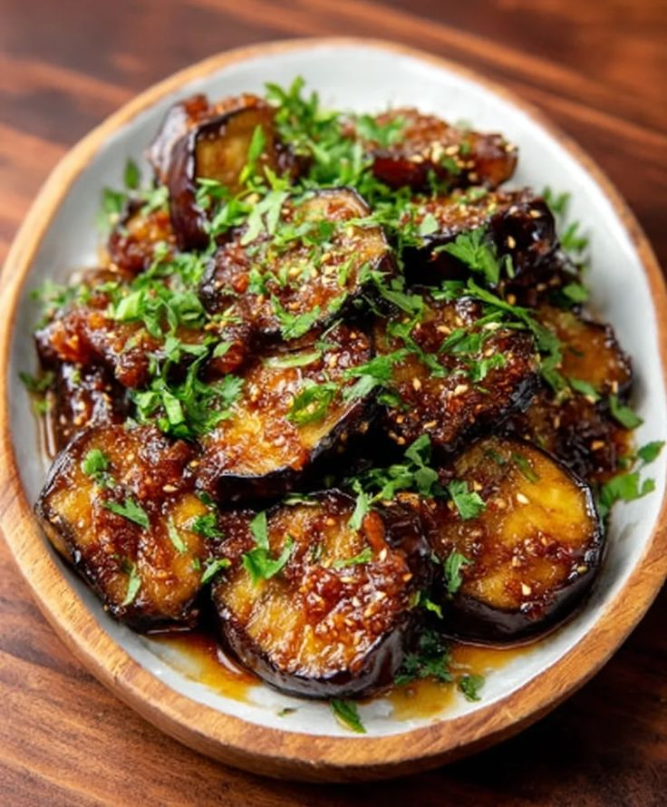

🌶 Pimientos de Padrón (España)

Ingredientes (4 personas)
| Producto |
Cantidad |
| Pimientos de Padrón |
250 g |
| Aceite de oliva |
50 ml |
| Sal gruesa |
Al gusto |
Elaboración
- Lava y seca los pimientos de Padrón.
- Calienta el aceite en una sartén y fríe los pimientos a fuego medio-alto hasta que se doren ligeramente.
- Escurre el exceso de aceite y espolvorea con sal gruesa.
- Sirve inmediatamente como tapa.
🍆 Berenjenas a la miel (España)

Ingredientes (4 personas)
| Producto |
Cantidad |
| Berenjenas |
2 medianas |
| Harina |
50 g |
| Aceite de oliva |
100 ml |
| Miel |
3 cucharadas |
| Sal |
Al gusto |
Elaboración
- Lava y corta las berenjenas en rodajas finas. Espolvorea con un poco de sal y deja reposar 10 minutos.
- Pasa las rodajas por harina y fríelas en aceite caliente hasta que estén doradas.
- Escurre el exceso de aceite y coloca las berenjenas en un plato.
- Rocía la miel por encima y sirve templadas como tapa.